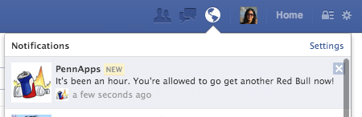

facebook api
ways to bootstrap your hack
Lu Chen (DMD '11)
Software Engineer on Timeline & Platform
Ryan Menezes (CIS '11)
Software Engineer on Messages Infrastructure
fun fact: we both participated in PennApps while at Penn and won third place for our app "Decider"
what might help my hack?
let's go over a few tools at your disposal...
facebook login
Don't waste precious hack time by writing
a login system from scratch.
We have libraries for nearly all platforms and languages, making it easy to use Facebook (and FB Login) within your app.


We're using the Javascript SDK in this presentation.
Logged Out View
Show the FB Login button, since the user isn't logged in.
Logged In View
The user is logged in! You can immediately access the current user's ID and profile pic. Your app can save this ID to your backend to identify returning users.
Uninstall the app to log out: App Settings
the "graph"
Why create fake data to put in your app when you can use the real stuff instead?
Read from the graph: newsfeed, check-ins, photos, music listens, messages, events, liked movies/books/sports, friends (and more)
Write to the graph: make status updates, upload photos and videos, add a check-in, create events (and more)
Demo: Attendees of the FB event
FB.api(
'/?fields=attending.fields(picture,name)',
function(response) {
/* Here's where you handle the response.
* Be sure user_events is in your access token!
* To inspect this call in the API explorer click here.
*/
}
);
Demo: Recent Music Listens
FB.api(
'/me/music.listens',
function(response) {
/* Here's where you handle the response.
* Be sure user_actions.music is in your access token!
* To inspect this call in the API explorer click here.
*/
}
);
plugins
copy and paste widgets for easy interaction
this is live btw, not a screenshot.
go on and add a comment →
notifications
alert users via Facebook notifications just don't spam plz
tl;dr
Facebook Login = quickly & easily rig up a login system
Graph API = get real data (judges can actually try your app!)
Notifications + Plugins = other ways to leverage Facebook
p.s.
FB is sponsoring a $500 prize for "Best Social Integration"